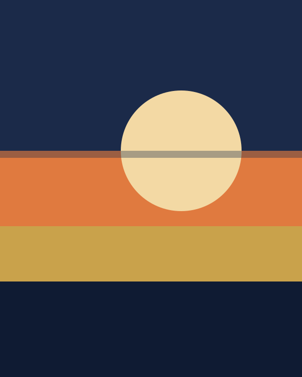
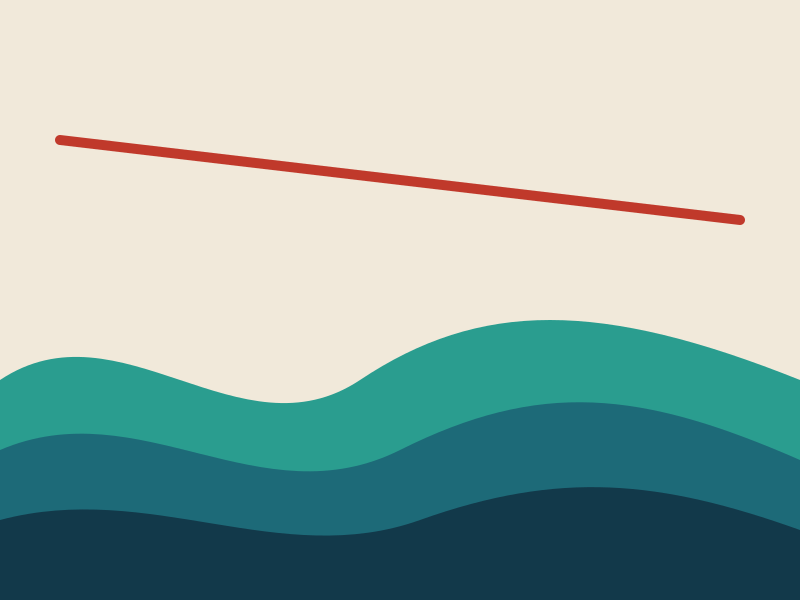
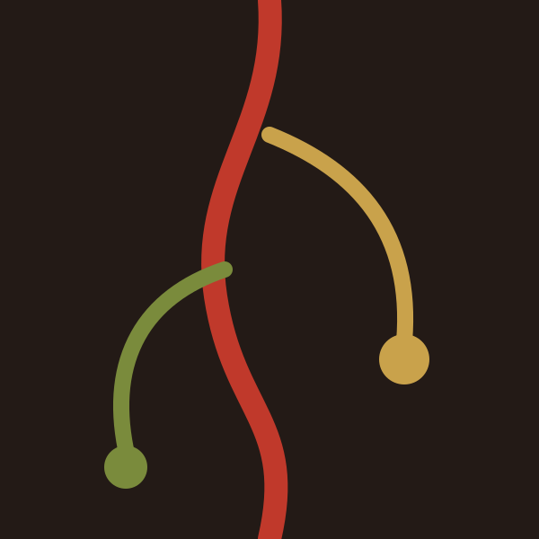

–
Marea alta. Exposición individual
Sala Atlántica, Cádiz
Pintura contemporánea
Color, mar y tierra sobre el lienzo. Bienvenido a mi estudio en línea: aquí encontrarás quién soy, el camino recorrido y dónde podrás ver mi obra próximamente.

Nací frente al mar y aprendí a mirar la luz antes que a mezclar los colores. Mi pintura parte de lo cotidiano —una marea, una raíz, una tarde de verano— y lo reduce a formas simples y color intenso.
Trabajo principalmente con óleo y acrílico, en series que se desarrollan durante meses. Me interesa que cada cuadro pueda mirarse despacio y que cada persona encuentre en él algo distinto.
Esta web es una primera versión: irá creciendo con nuevas series, obras disponibles y fechas de exposición.

Primeros cuadros en un taller de barrio y primeras ventas a amigos y familiares.
Formación en técnicas de óleo, color y composición.
Participación con tres obras en una muestra de artistas emergentes.
Nueva serie sobre óleo y tabla, punto de partida de mi lenguaje actual.

–
Sala Atlántica, Cádiz
–
Pabellón Central, Madrid
Estudio del artista, Sevilla